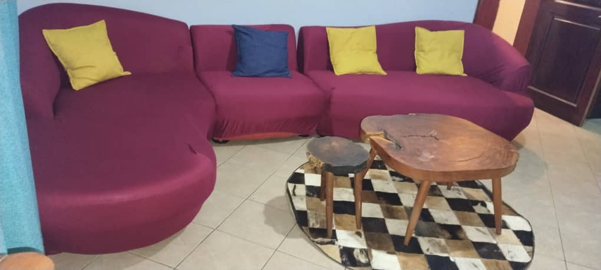

“Really liked having the whole apartment to ourselves. We could cook, relax and just do our own thing.”
Amina
A private two-bedroom home with room to unwind, right in Muyenga–Bukasa.
Entire private house. Two bedrooms. Kitchen and living room. Muyenga–Bukasa.
The Studio is a furnished two-bedroom house for guests who prefer the comfort of their own place. Settle into the living room, prepare a meal, and enjoy Kampala at your own pace.
Real photographs of the house, just as it is.

Muyenga is one of Kampala’s established residential neighbourhoods, appreciated for its hillside setting and relaxed atmosphere. From Kikojjuko Road in Muyenga–Bukasa, The Studio offers a private base for your time in the city.
Discover the neighbourhood ↗No complicated booking process. Tell us your dates and we'll respond directly to confirm availability.
Enquire about dates ↗Private accommodation · Two bedrooms · Sitting room · Kitchen · Bathroom
Questions before you book? ↗A preview of the guest review layout. Read verified feedback on Airbnb.
Two bedrooms. Your own space. An easy Kampala address.
From $80 USD per night
Settle into your own two-bedroom space, make breakfast at your pace and enjoy a quieter residential side of Kampala.
From the roomy sitting area and TV to the kitchen and dedicated workspace, the essentials are here for an easy city stay.
Explore the surroundings of Muyenga and the wider Makindye area, with Lake Victoria in the region.
Discover the space ↗View the official listing for current platform pricing and availability.